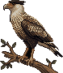
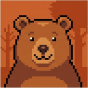

Plataforma de Recursos Inclusivos e Sala de Materiais Acessíveis
Uma aula.
Todos aprendendo juntos.
O PRISMA identifica as barreiras de cada aluno, adapta o material da aula com as regras do nosso Manual de Acessibilidade e entrega um guia prático para o professor e para a família.

Como funciona
Um ciclo que começa no aluno
e volta para ele.
Escolha um aluno fictício e veja o PRISMA passar pelas cinco etapas. O professor aprova tudo antes de chegar à turma.
- Identifica barreiras, não diagnostica. O perfil descreve como o aluno aprende, nunca um laudo.
- O professor aprova. A IA sugere; nada chega ao aluno sem revisão.
- Mesmo conteúdo. Muda a forma, nunca o objetivo da aula.
Antes e depois
A mesma ficha,
do jeito de cada aluno.
Uma ficha de Ciências do 5º ano passa pelas regras do Manual. Troque o aluno e veja a versão adaptada mudar.
Ficha original
Regras do Manual
Versão adaptada

Aceita, edita ou recusa cada mudança.

O que fazer em casa, em linguagem simples.
Três perguntas no fim da aula. Se precisar, o perfil é ajustado.
Para quem
Feito para a turma toda.
Professor, família e aluno.
1.0 · Professores
Menos tempo adaptando,
mais tempo ensinando.
Hoje o professor adapta tudo sozinho, à noite, para cada aluno. Com o PRISMA, ele descreve o aluno uma vez e cada aula sai pronta para revisar.
1.1 Cadastrar as necessidades
Um checklist de necessidades funcionais, sem diagnóstico. Ex.: “precisa de instruções em etapas”.
1.2 Enviar o material
PDF, texto ou slide. Do jeito que você já usa.
1.3 Revisar e aprovar
Original e adaptado lado a lado. Você aceita, edita ou recusa cada mudança.
1.4 Mini-check no fim da aula
Três perguntas rápidas mostram se a adaptação funcionou.
Prof.ª Coruja
2.0 · Famílias
Saber como ajudar em casa,
sem jargão.
A família recebe um guia curto, em linguagem simples, feito para aquele aluno e aquela aula.
2.1 Guia em linguagem simples
O que a criança está aprendendo e o que mudou no material dela.
2.2 O que fazer em casa
Dicas práticas: luz, rotina, como ler junto.
2.3 Quando procurar um profissional
Sinais observáveis que valem uma conversa com a escola ou com um especialista. O PRISMA orienta; não diagnostica.
Família Urso
3.0 · Alunos
O mesmo conteúdo da turma,
do seu jeito.
Ninguém fica com uma “atividade diferente”. Todos estudam a mesma coisa; só muda a forma.
3.1 Mesmo conteúdo, outra forma
Letra maior, cores seguras, passos numerados ou áudio.
3.2 Escolher como estudar
O aluno também diz o que funciona para ele.
3.3 Mini-check divertido
Três perguntas rápidas no fim da aula, sem nota.
Preguiça, 5º ano
Princípios
O que o PRISMA nunca negocia.
Identificar, não diagnosticar
Registramos necessidades funcionais. Diagnóstico é com profissional de saúde.
O professor aprova
A IA sugere. Nada chega ao aluno sem a revisão de quem conhece a turma.
Mesmo conteúdo para todos
Muda a forma, nunca o objetivo de aprendizagem.
Dados protegidos (LGPD)
Dados de crianças são sensíveis. Nesta demo, todos os alunos são fictícios.
Interface acessível
Contraste, teclado, leitor de tela e menos animação. Teste na barra lá em cima.